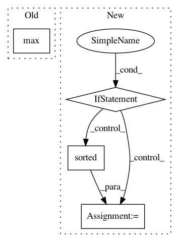

2316ac84ba197184254119c2a8c4aef2f1aac1c2,snips_nlu/tests/test_feature_functions.py,TestFeatureFunctions,test_crf_features,#TestFeatureFunctions#,208
Before Change
// Then
random_state = np.random.RandomState(seed)
collection_1_size = max(int((1 - drop_prob) * len(collection_1)), 1)
collection_2_size = max(int((1 - drop_prob) * len(collection_2)), 1)
col_1 = random_state.choice(sorted(collection_1.keys()),
collection_1_size, replace=False).tolist()
After Change
// Then
for signature in features_signatures:
// sort collections in order to make testing easier
if "tokens_collection" in signature["args"]:
signature["args"]["tokens_collection"] = sorted(
signature["args"]["tokens_collection"])
expected_signatures = [
{
"args": {
"tokens_collection":
In pattern: SUPERPATTERN
Frequency: 3
Non-data size: 4
Instances
Project Name: snipsco/snips-nlu
Commit Name: 2316ac84ba197184254119c2a8c4aef2f1aac1c2
Time: 2017-11-29
Author: adrien.ball@snips.net
File Name: snips_nlu/tests/test_feature_functions.py
Class Name: TestFeatureFunctions
Method Name: test_crf_features
Project Name: huyingxi/Synonyms
Commit Name: 4a44eff88fe62c76183418e4ffd779f28b973ef3
Time: 2018-05-27
Author: hailiang.hl.wang@gmail.com
File Name: synonyms/synonyms.py
Class Name:
Method Name: _nearby_levenshtein_distance
Project Name: tensorflow/magenta
Commit Name: 422678c8bf45574bb7c8a87ba434c455f9f7b877
Time: 2018-07-26
Author: iansimon@users.noreply.github.com
File Name: magenta/music/chord_inference.py
Class Name:
Method Name: sequence_note_pitch_vectors